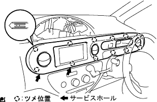

Head lamp leveling computer ASSY installation |
| 1. Head lamp leveling computer assignment |
 |
Match the location.
At the screw, attach the head rampramp slogging computer ASSY.
Connect the connector.
| 2. Installment panel W/Passenger Airbag ASSY installation |
In the screw <b> two, attach the Hita Tsuji Regista Duct No.1 to the instrument panel W/ Passenger Airbag Assy.

With two screws <b>, install the side deflo -rosulle duct No.1 to the instrument panel W/ Passenger Airbag Assike.
With two screws <b>, attach the Hita Tsugu register duct No.3 to the instrument panel W/ Passenger Airbag ASSY.
With two screws <b>, attach the side -deflo -rosula duct No.2 to the instrument panel W/ Passenger Airbag Assy.
Instrument panel W / Passenger Airbag ASSY The position of the front side of the vehicle, connect the central connector and the clamp, combine the seven claws on the front side, screv <c> or <c> or <D> Instead the instrument panel W / Passenger Airbag Assies with 4 books.
| 3. Installation panel finish plate installation |
 |
Combine the four claws, and attach the instrument panel fuinitsu plate with one screw <b>.
| 4. Installation cluster finish panel SUB-ASSY CTR installation |
|  |
Combine the 12 claws and attach the instrument cluster fujinitsu panel CTR CTR.
| 5. Installation panel register assistor Assy No.1 installation |
 |
Combine the five claws and attach the instrument panel register Assistor ASSY No.1.
| 6. Glove compartment door SUB-ASSY installation |
 |
Attach the grab compartment door with two screws <j>.
| 7. Combination meter Assisted |
 |
Connect the connector and press the combination sijon meter ASSY in front of the vehicle to match the clip.
Attach the combination sijon meter ASSY with two screws.
| 8. Installment cluster finish panel No.1 installation |
 |
Push the instrument cluster fuinitsui panel to the front of the vehicle and attach the claws together.
| 9. Lon pillar garnish LWR LH installation |
 |
Combine the four claws and attach the front pillar garnish LWR LH.
| 10. Lon pillar garnish LH installation |
 |
Put the claws at the bottom of the garnish first.
Match all clips and attach the front pillar garnish LH.
| 11. Pillar No.1 Garnish LH installation |
Match the claws and attach the pillar No.1 garnish.
| 12. Reardoors opening trimweather strip LH installation |
Combine the paint mark of the Weather Strip (yellow and white, one, one place) and the cut -out portion (arrow part) on the woeth strip on the body side, and attach the rear door opening trimweather strip LH.

| 13. Lon pillar garnish RH installation |
 |
Put the claws at the bottom of the garnish first.
Match all clips and attach the front pillar garnish RH.
| 14. Front Pillar Garnish LWR RH installation |
 |
Match the claws and attach the front pillar garnish LWR RH.
| 15. Front door opening trim Weather strip RH installation |
 |
Combine the paint mark of the Weather Strip (white, one place) and attach the front door opening trimweather strip RH.
| 16. Battery terminal connection |
| 17. Airbag Warnin Grand Point Inspection |
reference)| 18. Initialization when removing battery terminal |
reference| 19. headlamp leveling computer ASSY initialization procedure |
Vehicle status confirmation
Make the vehicle in the following state.
Warning display confirmation (*1)
OFF to ON the ignition switch, and check the warning display.
Initialization operation
 |
Use SST (Diagnow Sith check wire No.2) to shorten the 8 (LVL) terminal ← → 4 (CG) of the DLC3 connector.
Repeat the DLC3 connector terminals within 20 seconds after short circuit, headlap Dimaswitch HEAD → OFF operation.(*2)
Check the warning display.
| Work content | Warning display |
|---|---|
| Head lamp leveling computer ASSY replacement (new) | 2Hz 2 flashes (blinking interval 1.25 seconds) → 2Hz after blinking 3 times, turns off (initialization normal end) |
| Head lamp leveling computer ASSY removal, high control sensor replacement / detached, suspension replacement, etc. | No blinking [When initialized data is enabled] or 2Hz 2 flashes (blinking 1.25 second) |
| 20. Before adjusting head lamps |
Adjust the tire air pressure accurately.
One person (55kg) in the driver's seat.
Start the engine and charge the battery.
Full fuel, oil and water.
Shake the vehicle up and down and settle the suspension to a regular state.
 |
Make the dial of the leveling switch to 0.(Manual revenging car)
| 21. Head lamp optical axis adjustment (when using low beam tester) |
The distance between the tester and the headlamp lens is set to the tester's specified value.
Make the tester right to the vehicle.
 |
Set the head lamp tester.
The angle adjustment knob of the tester is 10 cm lower and 0 cm left and right.
Match the tester's integration lens at the center of the headlamp.
A treatment is not affected by the light of the other lamp.
Lights the headlamp with a low beam.
The light beam optical axis is adjusted based on the instruction manual of the head lamp tester to be used.

| 22. Head lamp light -degree inspection (when using low beam tester) |
After adjusting the optical axis, check the lightness with the head lamp tester.
| 23. Head lamp optical axis adjustment (when using low beam screen) |
 |
Prepare a thick blank paper.
 |
Create a screen for adjusting the figure.
The distance between the tester and the headlamp lens is 3m.
Make the tester right to the vehicle.
Set the head lamp tester.
Combine the center of the tester's light lens around the headlamp.
The center hole of the adjustment screen for the tester is centered on the tester and paste it with a tape.
A treatment is not affected by the light of the other lamp.
Lights the headlamp with a low beam.
If the line is larger from the reference line, adjust the light beam optical axis so that the light and dark split line fits the position of the reference line.
| 24. Head lamp light inspection (when using low beam high beam tester) |
The distance between the tester and the headlamp lens is set to the tester's specified value.
Make the tester right to the vehicle.
Set the head lamp tester.
The angle adjustment knob of the tester is 11cm lower and 23cm left.
Match the tester's integration lens at the center of the headlamp.
A treatment is not affected by the light of the other lamp.
Lights the headlamp with a low beam.
After adjusting the optical axis, check the lightness with the head lamp tester.
| 25. Head lamp optical axis adjustment (when using high beam tester) |
The distance between the tester and the headlamp lens is set to the tester's specified value.
Make the tester right to the vehicle.
|
Set the head lamp tester.
The angle adjustment knob of the tester is 1/5cm at the center of the lower head lamp, and 0cm on both left and right.(Left headlamp)
The angle adjustment knob of the tester is set to 1/5cm in height at the center of downward headlamps and 5cm left.(Right head lamp)
Match the tester's integration lens around the headlamp.
A treatment is not affected by the light of the other lamp.
Lights the headlamp with a high beam.
Adjust the optical axis of the high beam based on the handling of the head lamp tester to be used.
| 26. Head lamp lightness inspection (when using high beam tester) |
After adjusting the optical axis, check the lightness with the head lamp tester.